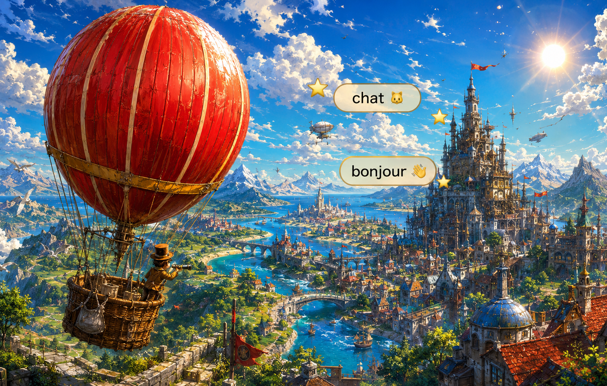
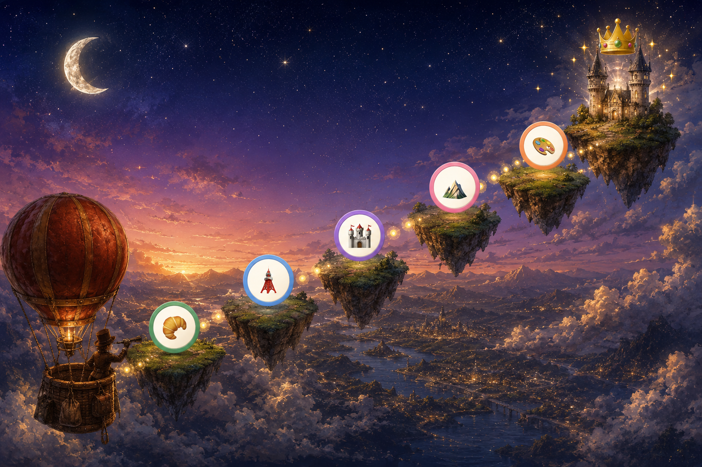

どの教材も、初めから自由に選べます。
これは辞書ではなく「地図」です。文法クイズ(ぶんぽう1〜3)に出てくるトピックが、なぜ存在し、互いにどうつながっているのかを一気に見渡します。細かい活用は問題の解説に任せて、ここでは考え方の骨組みだけを掴んでください。読了後にクイズを解くと、解説の吸収率がまるで変わります。
フランス語文法の膨大なルールは、たった2つの原則に集約できます。
原則① 一致(アコール): 文の中の単語たちは、互いに形を合わせます。主語が変われば動詞が変わり(活用)、名詞の性・数が変われば冠詞も形容詞も過去分詞も変わる。「ひとつ変われば、みんな変わる」。初級文法はほぼ全部この練習です。
原則② モード(法): フランス語の動詞は「いつの話か(時制)」だけでなく「どんな心で語るか(法)」でも形を変えます。事実として語るのか、想像として語るのか、願望として語るのか。上級文法で霧のように感じる接続法・条件法は、この「心のモード切り替え」だと分かれば一本の線でつながります(第4節)。
すべての出発点は「誰が話すか」です。フランス語の文は必ず主語から始まり、主語が決まると動詞の形が決まります。まず登場人物(主語人称代名詞)の顔ぶれを揃えましょう。
| 主語 | 読み | 意味 | 備考 |
|---|---|---|---|
| je | ジュ | 私は | 母音の前で j'(j'ai, j'aime) |
| tu | チュ | きみは | 家族・友達・子ども向けの親しい「きみ」 |
| il / elle | イル/エル | 彼は/彼女は | 物も受ける(男性名詞→il、女性名詞→elle) |
| on | オン | 私たちは(口語)/人は | 意味は複数でも文法はil扱い(on a, on va) |
| nous | ヌ | 私たちは | 語尾はいつも -ons 系 |
| vous | ヴ | あなたは/あなたたちは | 丁寧な単数にも複数にも。語尾は -ez 系 |
| ils / elles | イル/エル | 彼らは/彼女らは | 男女混合はils。発音は単数と同じことが多い |
次に、文法全体の主役である2大動詞。être(〜です)とavoir(持つ)は、後に複合過去の「助動詞」として再登場するため、この2つの活用は完全暗記の価値があります。
| 主語 | être(〜です) | 読み | avoir(持つ) | 読み |
|---|---|---|---|---|
| je | suis | ジュ スイ | ai (j'ai) | ジェ |
| tu | es | チュ エ | as | チュ ア |
| il/elle/on | est | イレ | a | イラ |
| nous | sommes | ヌ ソム | avons | ヌ ザヴォン |
| vous | êtes | ヴ ゼット | avez | ヴ ザヴェ |
| ils/elles | sont | イル ソン | ont | イル ゾン |
使い分けの感覚: êtreは「状態・属性」(Je suis japonais / Elle est grande)、avoirは「所有」— ただしフランス語のavoirは守備範囲が広く、年齢(J'ai six ans)、空腹(J'ai faim)、恐怖(J'ai peur)、正しさ(Tu as raison)まで「持つ」で表します。「状態っぽいのにavoir」の熟語群は初級最大の頻出ポイント。
動詞の9割を占める-er動詞は、全部同じパターンで活用します。parler(話す)を代表に:
| 主語 | 形 | 発音 | ポイント |
|---|---|---|---|
| je | parle | パルル | je・tu・il・ils の4つは発音がまったく同じ。違いは綴りだけ! |
| tu | parles | パルル | |
| il/elle | parle | パルル | |
| nous | parlons | パルロン | 音が変わるのはここと |
| vous | parlez | パルレ | ここの2つだけ |
| ils/elles | parlent | パルル | -entは発音しない(最重要!) |
最後に不規則の代表aller(行く)。頻出なのに原形の面影がない変わり者ですが、体調表現(Ça va ? / Je vais bien)と近接未来(Je vais manger=これから食べる)まで担う働き者です。
| je | tu | il | nous | vous | ils |
|---|---|---|---|---|---|
| vais ヴェ | vas ヴァ | va ヴァ | allons ザロン | allez ザレ | vont ヴォン |
allerとセットで覚えるのが前置詞の縮約。à(〜へ)と de(〜の・から)は、le・lesとぶつかると必ず合体します。
| + le(男) | + la(女) | + l'(母音) | + les(複数) | |
|---|---|---|---|---|
| à(〜へ) | au (au parc) | à la (à la plage) | à l' (à l'école) | aux (aux toilettes) |
| de(〜の/から) | du (du Japon) | de la | de l' | des |
名詞の性: すべての名詞が男性か女性に属します(意味とは無関係の文法上の性)。理屈で判別できないので、新しい単語は必ず冠詞ごとセットで暗記(une pomme、un livre)。この性が、これから見る冠詞・所有・形容詞、そして中級の過去分詞まで、一致すべての起点になります。
冠詞の全体図: フランス語の冠詞は3系統。それぞれ「数える1つ」「特定・種類全体」「数えない量」を担当します。
| 系統 | 男性 | 女性 | 複数 | いつ使う? |
|---|---|---|---|---|
| 不定冠詞 (ひとつの) | un | une | des | 数えられる、初登場のもの: un chat(とある1匹の猫) |
| 定冠詞 (その/〜というもの) | le (l') | la (l') | les | 特定できるもの・種類全体: le chat(その猫)/ J'aime le chocolat(チョコというもの) |
| 部分冠詞 (いくらかの)※中級 | du | de la (de l') | — | 数えない量: Je mange du pain(パンをいくらか) |
否定と疑問: 否定は ne+動詞+pas のサンドイッチ(Je ne mange pas)。疑問は3段階 — ①語尾を上げるだけ(Tu viens ?) ②Est-ce que を頭に付ける ③倒置(書き言葉)。疑問詞は7兄弟: où(どこ)quand(いつ)qui(誰)que/quoi(何)comment(どう)pourquoi(なぜ)combien(いくつ)。
所有形容詞: 「私の・きみの…」も後ろの名詞の性・数で形が決まります(持ち主の性別は無関係! 男の子が言っても「ぼくの姉」は ma sœur)。
| 持ち主 | +男性名詞 | +女性名詞 | +複数 |
|---|---|---|---|
| 私の | mon | ma | mes |
| きみの | ton | ta | tes |
| 彼の/彼女の | son | sa | ses |
| 私たちの | notre | nos | |
| あなたの | votre | vos | |
| 彼らの | leur | leurs | |
特例をひとつ: 女性名詞でも母音始まりの前では mon/ton/son を使います(mon amie、son école)— ma amieが言いにくいから、という発音都合のルールです。
形容詞の性数一致: 形容詞は名詞に合わせて4つの顔を持ちます。
| 男性単数 | 女性単数 | 男性複数 | 女性複数 | |
|---|---|---|---|---|
| 小さい | petit プティ | petite プティット(音が変わる!) | petits プティ(sは読まない) | petites プティット |
| 美しい(特別変化) | beau | belle | beaux | belles |
女性形の-eが付くと「読まなかった子音が復活する」(petit プティ→petite プティット、grand グラン→grande グランド)のが発音の見どころ。ここまでが初級 — 「ひとつ変わればみんな変わる」一致の言語の完成です。
中級のテーマは「時間」です。フランス語は過去をふたつの視点で語り分けます。
| 時制 | 役割 | イメージ |
|---|---|---|
| 複合過去 (avoir/être+過去分詞) | 起きた出来事 | カメラが切り替わる瞬間。「食べた」「着いた」「言った」 |
| 半過去 (-ais系語尾) | 背景・状態・習慣 | 流れている風景。「〜していた」「昔よく〜したものだ」 |
| 大過去 (半過去のavoir/être+過去分詞) | 過去のさらに前 | 「(その時にはもう)〜してしまっていた」 |
| 単純未来 (-ai/-as/-a…) | これからのこと | 予測・約束。「〜するだろう」 |
複合過去の作り方: 「助動詞(avoirまたはêtreの現在形)+過去分詞」の2語セット。まず過去分詞の作り方から。
| 動詞のタイプ | 過去分詞 | 例 |
|---|---|---|
| -er動詞 | -é | manger→mangé、parler→parlé(例外なし) |
| -ir動詞 | -i | finir→fini、choisir→choisi |
| -re動詞 | -uが多い | entendre→entendu、perdre→perdu、vendre→vendu |
| 不規則(最重要組) | 個別に暗記 | fait(faire)・dit(dire)・pris(prendre)・vu(voir)・lu(lire)・mis(mettre)・été(être)・eu(avoir)・bu(boire)・né(naître) |
助動詞の使い分け: ほとんどの動詞はavoirですが、移動・変化の約15動詞だけがêtreを使います。「家の絵」でペア暗記するのが定番です。
| être組(ペアで暗記) | 意味 |
|---|---|
| aller ⇔ venir | 行く ⇔ 来る |
| entrer ⇔ sortir | 入る ⇔ 出る |
| arriver ⇔ partir | 着く ⇔ 出発する |
| monter ⇔ descendre | 上る ⇔ 下りる |
| naître ⇔ mourir | 生まれる ⇔ 死ぬ |
| rester / rentrer / retourner / tomber / devenir | とどまる / 帰る / 戻る / 落ちる / 〜になる |
半過去の作り方: ①nousの現在形を取る(nous parlons) ②-onsを外す(parl-) ③共通語尾を付ける。例外はêtre(語幹ét-)ただ1つ、という親切設計です。
| 主語 | 語尾 | parler→ | être(唯一の例外) |
|---|---|---|---|
| je | -ais | parlais パルレ | étais エテ |
| tu | -ais | parlais | étais |
| il/elle/on | -ait | parlait | était |
| nous | -ions | parlions パルリオン | étions |
| vous | -iez | parliez パルリエ | étiez |
| ils/elles | -aient | parlaient パルレ | étaient |
単純未来の作り方: 原形(の r 音)+avoirそっくりの語尾。不規則動詞は語幹だけ特別で、語尾は共通です。
| 語尾(全動詞共通) | je -ai / tu -as / il -a / nous -ons / vous -ez / ils -ont |
|---|---|
| 規則の例 | parler→je parlerai、finir→tu finiras |
| 特別な語幹 | être→ser-(serai)/ avoir→aur-(aurai)/ aller→ir-(irai)/ faire→fer-(ferai)/ venir→viendr- / pouvoir→pourr- / voir→verr- |
部分冠詞: 初級の冠詞表で予告した第3の系統。パン・水・勇気のように「数えず量で捉えるもの」に付けます。deの縮約(du=de+le)と同じ顔なのは偶然ではなく、「〜のいくらか」という出自だからです。
| 男性名詞 | 女性名詞 | 母音の前 | 否定文では |
|---|---|---|---|
| du pain | de la confiture | de l'eau | すべてdeに: pas de pain |
目的語代名詞: フランス語は同じ語の繰り返しを嫌い、代名詞に置き換えて動詞の前に置きます(je le vois=それが見える)。英語と語順が逆なので、表とリズムで体に入れましょう。
| 働き | 形 | 例 |
|---|---|---|
| 〜を(直接) | me / te / le・la・les / nous / vous | Je le vois.(それを見る) Je t'aime.(きみを愛してる) |
| 〜に(間接: à+人) | me / te / lui(単数・男女共通) / nous / vous / leur(複数) | Je lui parle.(彼・彼女に話す) |
| そこへ・そこに(à+場所) | y | J'y vais.(そこへ行く) On y va ?(行こうか?) |
| それを いくらか(de系・数量) | en | J'en veux.(欲しい) J'en ai deux.(2つある) |
比較と最上級: 型はシンプル、例外は2語だけ。
| 比較の3点セット | plus(より)/ aussi(同じくらい)/ moins(より〜でない)+形容詞・副詞+que 〜 |
|---|---|
| 名詞の量 | plus de+名詞+que(J'ai plus de livres que toi) |
| 特別な比較級 | bon(良い)→meilleur / bien(上手に)→mieux(×plus bon・×plus bienとは言えない) |
| 最上級 | le/la/les+plus+形容詞(le plus fort=いちばん強い)、le meilleur=最高の |
ここまでが中級。時間を編み、文を圧縮する道具が揃いました。次の上級では、いよいよ「文と文」「現実と心」を編み込みます。
ここが本書の核心です。動詞の形を決める軸は2本あります。横軸が時制(いつ)、縦軸が法(どんな心で)。フランス語には4つの法があります。
| 法 | 心のモード | 例 |
|---|---|---|
| 直説法 | 事実として語る(標準モード) | Il vient. 彼は来る(事実) |
| 条件法 | 想像・仮定として語る =現実から一歩引く | Il viendrait. (もし〜なら)来るだろうに |
| 接続法 | 頭の中の願望・感情・必要を語る (queの後ろ専用) | Je veux qu'il vienne. 来てほしい |
| 命令法 | 相手を動かす | Viens ! 来て! |
条件法の正体: 「現実からの距離」を表す形です(語幹は未来形、語尾は半過去 — 未来の夢を過去の霞がかったフィルターで見る、と覚えると詩的)。用法は2つだけ。①丁寧: Je veux(欲しい!)→Je voudrais(できれば頂きたいのですが)。要求を「仮の話」にすることで押しつけを消す— フランス語の敬語は時制で作るのです。②仮定の帰結: siの文とセットで「〜だったら…するのに」。
| siの3つの型 | si節 | 帰結 | 意味 |
|---|---|---|---|
| 型① 現実的な条件 | 現在形 | 未来形 | 晴れたら行こう |
| 型② 今と違う空想 | 半過去 | 条件法現在 | 翼があったら飛ぶのに |
| 型③ 過去の後悔 | 大過去 | 条件法過去 | 知っていたら来なかったのに |
接続法の正体: queの後ろの世界が「事実」ではなく「頭の中(まだ実現していない願望・必要・感情・疑い)」のとき、動詞が接続法に切り替わります。Je sais qu'il vient(来ると知っている=事実→直説法)に対して、Je veux qu'il vienne(来てほしい=願望→接続法)。同じqueでも、中身の現実度で法が変わる— これが全てです。
接続法を呼ぶトリガーは決まっています: il faut que(必要)、vouloir/souhaiter que(願望)、être content/avoir peur que(感情)、bien que(〜だけれど)、pour que(〜するために)。逆にpenser que・savoir que(思う・知る=確信)は直説法。「確信は直説法、心の揺れは接続法」。
関係代名詞・ジェロンディフ・受動態・間接話法・使役。バラバラに見える上級トピックは、実は全部同じ目的を持っています: 複数の文・動作・視点を、1つの文に編み込むこと。
関係代名詞 = 2つの文の接着剤。J'ai un ami. + Il habite à Paris. → J'ai un ami qui habite à Paris.。4人の役割分担だけ覚えれば完成です。
| 働き | 見分け方 | 例 | |
|---|---|---|---|
| qui | 主語の身代わり | 直後に動詞 | l'ami qui habite... |
| que | 目的語(〜を)の身代わり | 直後に主語+動詞 | le livre que je lis |
| où | 場所・時 | 「そこで/その時」の関係 | la ville où je suis né |
| dont | de系の身代わり | 動詞がdeを連れている | le livre dont je t'ai parlé (parler de) |
ジェロンディフ(en+現在分詞) = 2つの動作を1人の主語で同時に。Il chante en travaillant(働きながら歌う)。「〜したらすぐ」「〜することで(手段)」にも広がります。enを外して文頭に置けば理由(Étant malade, ...=病気なので)。
受動態(être+過去分詞) = 視点の反転。「猫がねずみを食べる」を、ねずみの側から語り直す(La souris est mangée par le chat)。ただしフランス語は堅い受動態をあまり好まず、on(On parle français ici)やse動詞(Le pain se vend ici)で軽やかに言い換える文化があります。「〜してもらう」はse faire+原形(se faire couper les cheveux=髪を切ってもらう)。
間接話法 = 他人のセリフを自分の文に取り込む。Il a dit : « Je viendrai » → Il a dit qu'il viendrait。取り込むときに時制がスライドするのが「時制の一致」: 現在→半過去、未来→条件法、複合過去→大過去。条件法がここで「過去から見た未来」という第3の仕事をしている点に注目 — 法と時制は互いに乗り入れるのです。
使役(faire/laisser+原形) = 他人の動作を自分の文に。faire=させる・してもらう(Maman me fait manger / faire réparer le vélo)、laisser=させておく・許す(Papa me laisse regarder la télé)。強制のfaire、放任のlaisser。
①この読み物を一度通読 → ②ぶんぽう1を「おぼえてないことばだけ」モードで回す(冠詞と一致の反射を作る) → ③ぶんぽう2は複合過去×半過去の使い分け(第3節の表)を横に置いて → ④ぶんぽう3の前に第4節「法」だけ再読。間違えた問題は自動でふくしゅうボックスに入るので、解説を読んでから捕まえ直してください。解説とこの地図を往復するのが最短ルートです。Bon courage !

